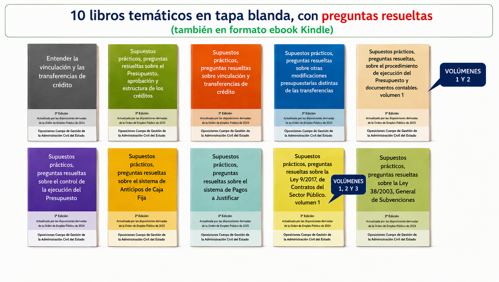

En estos 10 libros se resuelven preguntas de supuestos prácticos a desarrollar, relacionadas con gestión financiera, contratación o subvenciones. Sobre estos temas suelen aparecer preguntas en los supuestos prácticos a desarrollar de las oposiciones al Cuerpo de Gestión de la Administración Civil del Estado, tanto por acceso libre como por promoción interna.
Por tanto, el objetivo de estos libros es agrupar en un solo libro una serie de preguntas de examen que están relacionadas con un mismo tema, ya sea de gestión financiera, de contratación o de subvenciones.
Las respuestas a las preguntas están razonadas y ampliamente explicadas, lo que contribuye a que el opositor profundice en sus conocimientos y alcance a percibir detalles que, normalmente, en la lectura y estudio normal de la normativa, pasan desapercibidos.
Estos libros sirven para preparar el supuesto práctico a desarrollar, en las partes de gestión financiera, contratación y subvenciones, de las oposiciones al Cuerpo de Gestión de la Administración Civil del Estado derivadas de la Oferta de Empleo Público de 2026, cuyos exámenes tendrán lugar probablemente a principios de 2027.
Esta serie está compuesta por los siguientes 10 libros, algunos con más de un volumen:
Más información en Amazon.es:
Ver libros en Amazon